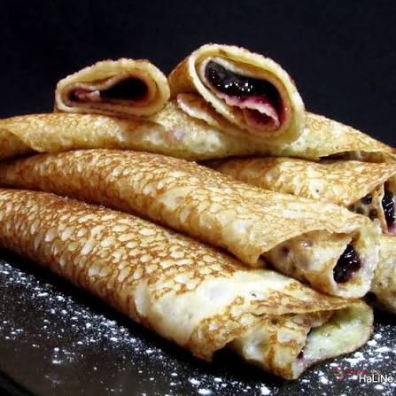

Domácí nadýchané palačinky
Upečte si ty nejlepší domácí palačinky podle tohoto jednoduchého a osvědčeného receptu. Jsou ideální k snídani nebo jako sladká tečka k obědu.

Seznam surovin
- 250 ml polotučného mléka
- 140 g hladké mouky
- 1 vejce
- Špetka soli
- 1 lžíce cukru (volitelně)
- Olej nebo máslo na potření pánve
Postup přípravy
- V hlubší míse promícháme mléko, vejce, špetku soli, hladkou mouku a případně cukr.
- Postupně zašleháváme, dokud nevznikne hladké a řidší těsto bez hrudek.
- Rozpálíme pánev s kapkou oleje nebo kouskem másla.
- Naběračkou nalijeme těsto na pánev a rozlijeme ho po celé ploše.
- Smažíme z obou stran dozlatova (zhruba 1–2 minuty po každé straně).
- Hotové palačinky podáváme s oblíbenou náplní, například marmeládou, čokoládou, ovocem nebo šlehačkou.